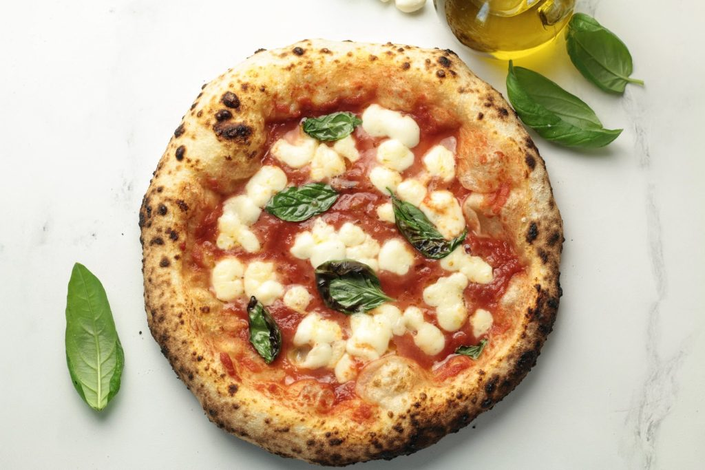

PIZZA NAPOLITANA

Description:
Neapolitan pizza is a style of pizza made with tomatoes and mozzarella
cheese.The tomatoes must be either San Marzano tomatoes or pomodorino
del Piennolo del Vesuvio, which grow on the volcanic plains to the
south of Mount Vesuvius. The cheese must be mozzarella di bufala
campana, or fior di latte.
Pizza napoletana is a TSG product in the European Union and the United
Kingdom, and the art of its making is included on UNESCO's list of
intangible cultural heritage.
Ingredients:
- 570 gr Flour Tipo 00
- 4 gr Fresh yeast
- 350 ml Water
- 6 gr Sugar
- 17 ml Olive oil
- 11 gr Salt
Steps
- Put the water in a bowl and mix it with the salt.
- Add 10% of flour to the mix and add the fresh yeast,
beat it until the yeast is disolved in the dought
- Add the sugar and mix it.
- Add all the left flour and beat and knead the dought
until forms a consistent texture.
- Add the oil and do the same again, then remove it
from the bowl and knead for 20 min.
- Once the dought has a consistent texture put it
again in the sealed bowl and let it rest for 2 hours.
- The size of the dought should have increased, now
cut the dought in to 4 pieces and round them.
- Put the small portions in different sealed containers
let them rest for at least 6 hours and they will be ready
for an awesome homemade pizza napolitana